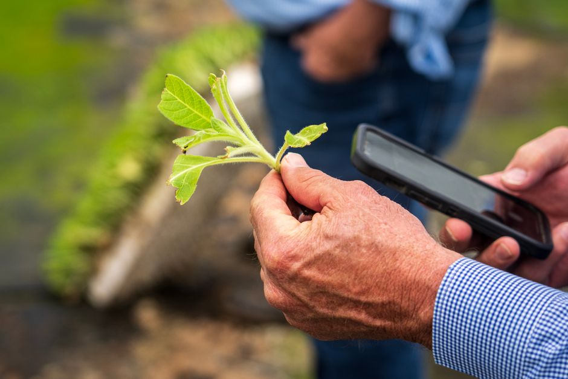

Image Augmentation: What Actually Generalises
Not every flip, crop, or colour jitter helps your model. Here's how to reason about which augmentations earn their place in a training pipeline.

Why augmentation choices are usually made on faith
Most computer vision tutorials hand you a fixed recipe: random crop, horizontal flip, colour jitter, maybe cutout, and a rotation for good measure. It works well enough on the benchmark in the notebook, so it gets copied into the next project, and the next. The trouble is that augmentation is not a free lunch. Every transform you apply encodes an assumption about what kind of variation your model should be invariant to, and that assumption is only correct if it matches the variation your deployment data will actually contain.
Consider a classifier trained to sort handwritten digits versus one trained to read house numbers photographed by a delivery driver. Horizontal flipping helps neither, because a flipped 6 looks like a 9 and a flipped house number is nonsense, but vertical flipping would actively harm both. Meanwhile, aggressive colour jitter might be irrelevant for digits scanned under controlled lighting but essential for the driver's photos taken at dusk, in shade, or under sodium streetlights. The point is that augmentation is not a generic regulariser you sprinkle on top; it is a hypothesis about the test distribution.
This matters because augmentation interacts with your evaluation in a way that is easy to miss. If you augment your training set with rotations and then report validation accuracy on a clean, unrotated set, you have learned nothing about whether rotation invariance was worth having. You have only checked that adding noise didn't hurt too much. The real test is whether the augmentation improves performance on data that resembles your actual deployment conditions, which means your validation and test sets need to reflect those conditions honestly, not just be held-out slices of the same clean distribution you trained on.
A worked example: crops, flips, and what they buy you
Suppose you are training a model to classify plant leaf diseases from photos taken by farmers on mobile phones. Your training set has around eight thousand images, collected under fairly controlled conditions: leaves photographed flat, centred, good lighting. Your deployment reality will involve leaves at odd angles, partial occlusion by fingers or other leaves, and inconsistent lighting from outdoor conditions.
Random horizontal and vertical flips are nearly free here: a leaf disease pattern does not care about orientation, so flipping roughly doubles your effective training diversity along an axis that genuinely varies in deployment. If your baseline model gets, say, 82 percent accuracy on a held-out set that mimics real farmer photos, adding flips alone might nudge that to 84 percent, because you have removed a spurious cue (leaves in the training set might have been photographed in a consistent orientation) without introducing any distortion that doesn't occur in reality.
Random cropping and scaling is a slightly different bet: it assumes the disease signature is locally identifiable even when the leaf isn't fully in frame or is photographed from a different distance. This tends to pay off when your deployment photos genuinely vary in framing, which mobile phone photos almost always do. Colour jitter is where things get more delicate. A mild jitter, small perturbations in brightness and saturation, generally helps because outdoor lighting varies. But push it too far, say wildly shifting hue, and you risk teaching the model that colour is irrelevant to disease diagnosis, when in fact colour (yellowing, browning, dark spots) is often the primary diagnostic signal. In that case an aggressive colour augmentation could quietly erode the very feature your model needs, and your validation accuracy might drop from 84 percent to 79 percent even though the augmentation looks superficially similar to the mild version.
The lesson from this worked case is that augmentations should be chosen by asking what symmetry or nuisance variable exists in your deployment data, not by reaching for a standard library and switching everything on. Flips and crops are attractive because they usually reflect genuine, harmless variation. Colour and geometric distortions need to be checked against whether they destroy task-relevant signal.

How to actually test whether an augmentation helps
The only reliable way to know if an augmentation generalises is to run an ablation against a validation set that is leakage-aware and distribution-matched to your real use case. Leakage-aware means your validation images come from genuinely different sources, patients, sessions, or devices than your training images, not just a random split of the same batch, because random splits of correlated data will overestimate how much any augmentation, or indeed any model, actually helps in the wild. Distribution-matched means your validation set should look like what the model will see in production, including the messiness, not a cleaned-up version of it.
With that in place, the test is simple: train an identical architecture with and without the augmentation in question, holding everything else fixed, including random seed where feasible, and compare validation performance across a few repeated runs to account for training variance. If flips give you a consistent one to two point accuracy gain across three runs, that's a real signal. If a fancier augmentation like mixup or heavy elastic distortion gives you a gain on one run and a loss on the next, you are looking at noise, and you should not ship it based on a single lucky number.
It is also worth checking augmentations against a slice-level breakdown rather than a single aggregate accuracy figure. An augmentation might raise overall accuracy while quietly hurting a specific subgroup, for instance images taken in low light, if that subgroup is small enough that its degradation is masked by improvement elsewhere. This is the same failure mode as any aggregate metric hiding subgroup harm, and it is worth the extra ten minutes to check a confusion matrix or per-class breakdown before deciding an augmentation is a net positive.
The practical takeaway
Treat every augmentation as a claim about your deployment data, not a default setting. Ask which physical or optical variations genuinely occur between your training images and the real-world inputs your model will face, and reach only for transforms that mimic those variations plausibly. Then verify the claim with a proper ablation on a leakage-aware, representative validation set, checked at both the aggregate and subgroup level, and repeated enough times to distinguish a real effect from noise. Augmentation that generalises is augmentation you can justify with a specific reason tied to your data, and can defend with a number you trust.